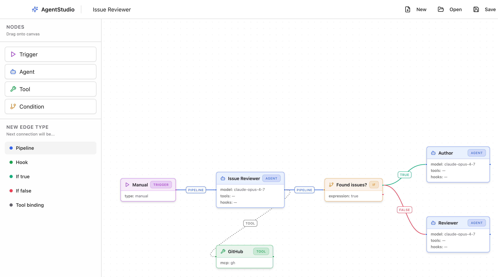
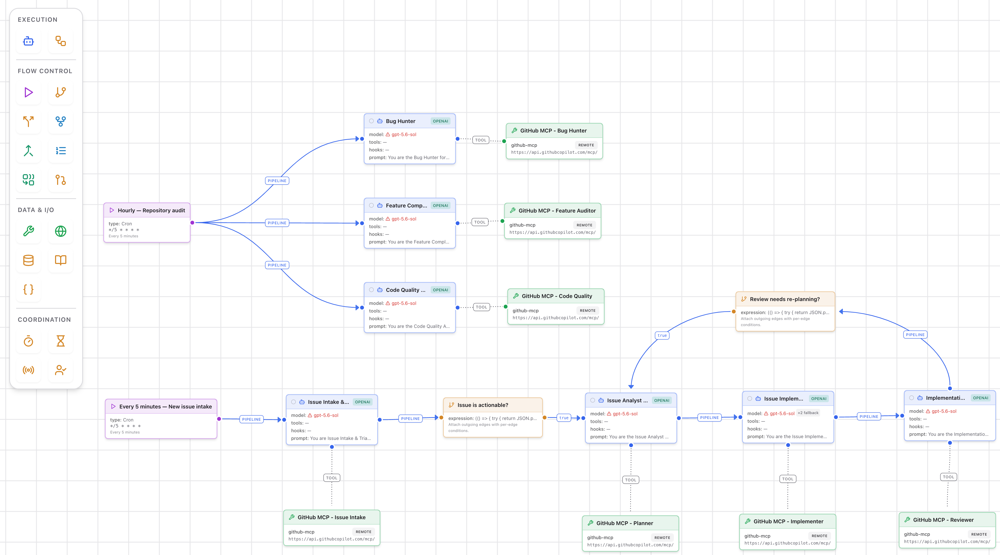

“AI systems that can pursue complex goals with limited direct supervision.”
Shavit et al. 2023
“AI systems that can pursue complex goals with limited direct supervision.”
Shavit et al. 2023
“AI agents are artificial entities that sense their environment, make decisions, and take actions.”
Xi et al. 2023
“…an application that attempts to achieve a goal by observing the world and acting upon it using the tools that it has at its disposal.”
Wiesinger et al. 2024
Agents are systems where “LLMs dynamically direct their own processes and tool usage, maintaining control over how they accomplish tasks.”
Anthropic 2024
“Agents are systems that independently accomplish tasks on your behalf.”
OpenAI 2025
“Systems of multiple AI agents collaborating to achieve complex goals.”
Sapkota et al. 2025
AI agents need to meaningfully decompose problems into manageable sub-components, “and safely delegate their completion across to other AI agents and humans alike.”
Tomašev et al. 2026
AI agents “differ from earlier generative AI models in one important way: they can act, with direct effects on their environment and on the systems they connect to.”
Singapore Consensus 2026
Operates without direct human intervention and controls its own actions: the LLM directs its own process and tool use.
Wooldridge & Jennings 1995 · Anthropic 2024
Takes the initiative toward a goal instead of only reacting, and accomplishes the task on the user's behalf.
Wooldridge & Jennings 1995 · OpenAI 2025
Senses the environment and responds to changes; each step brings ground truth, such as tool results or code output.
Wooldridge & Jennings 1995 · Anthropic 2024
Interacts with other agents and humans: delegates, collaborates, hands off, and returns control when it cannot finish.
Wooldridge & Jennings 1995 · Tomašev et al. 2026 · OpenAI 2025
Interleaves reasoning with acting, breaks tasks into steps, reflects on past actions and corrects course.
Yao et al. 2022 · Weng 2023
Uses tools to gather context and to take actions, choosing the right one for the current state of the workflow.
OpenAI 2025 · Schick et al. 2023
An agent is an LLM that reasons and decides, guided by instructions and memory, acting on its environment and on other agents through tools, all inside guardrails.
AgentStudio is a desktop app where you draw a multi-agent workflow on a canvas instead of writing code. Agent, Tool, Trigger and Condition nodes are joined by edges, and the drawing is itself the runnable definition. It runs on the Claude Agent SDK and OpenAI Agents, with tools from MCP servers, and a CLI and cron or webhook triggers let it run unattended. Its own repository became its first workload: agents triage, build, validate, review and merge the changes to the app that runs them, as a test of autonomy on a real, growing codebase.


12 May · Day 1
13 May
15 May
10 to 19 Jul
src1,303 commits920 merged PRs1,468 issues17 days with commits
Before, developers fixed the roles and the number of agents in advance. Now a lead agent decides how many subagents the task needs and launches them in parallel. The latest systems let peer agents claim tasks and message each other, with no central orchestrator.
Anthropic 2024 · Hadfield et al. 2025 · Carlini 2026
Before, developers wrote a fixed list of tools. Now the agent writes code to act, creates the tool a task needs and saves it for reuse. It can even evolve its own scaffold while it works.
Anthropic 2024 · Xia et al. 2025 · Jones & Kelly 2025
Before, agents could only use the calls developers had wired in. Now they run code in their own sandbox, with many tasks in parallel. They can also operate a computer like a person: look at the screen, click and type.
Anthropic 2024 · OpenAI 2025 · Claude blog 2026
Instead of waiting for a full specification, the agent expands a short request into a detailed plan. It asks clarifying questions when the task is complex. It tests the running result itself rather than trusting its own report.
Rajasekaran 2026 · Anthropic 2026
Models tend to praise their own output. So a separate evaluator agent reviews what the generator built. Keeping the doer and the judge apart is a strong lever for quality.
Rajasekaran 2026
People used to approve every action. With experience they switch to auto-approve and watch, stepping in only when needed. Auto-approve grows from about 20% to over 40% of sessions.
Anthropic 2026